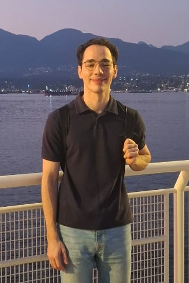

I am a PhD student at UBC under the supervision of Dr. Philip Loewen and Dr. Bushan Gopaluni. My interests include control theory, contact force models, and machine learning. In collaboration with Honeywell Industrial Solutions, my research aims to optimize the manufacturing process of lithium-ion batteries.
I am a member of UBC's Data Analytics Lab and the Institute of Applied Mathematics.
Before my PhD I obtained my Master's at HSE in Moscow, Russia under the supervision of Dr. Harold Moreno. There I worked on the Stochastic version of the Bin Packing Problem, a project which was supported by Huawei's Math Modelling Lab.